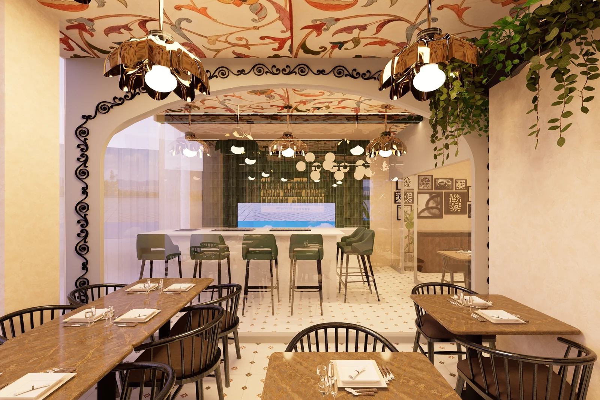

Our story
A world of flavour. One shared fire.
Named for the French grilling chef, Grillardin brings together grilling techniques, traditions and flavours from around the world. At its heart is something simple: gathering around a grill, sharing a meal, and enjoying the company of friends and family.
Discover our story